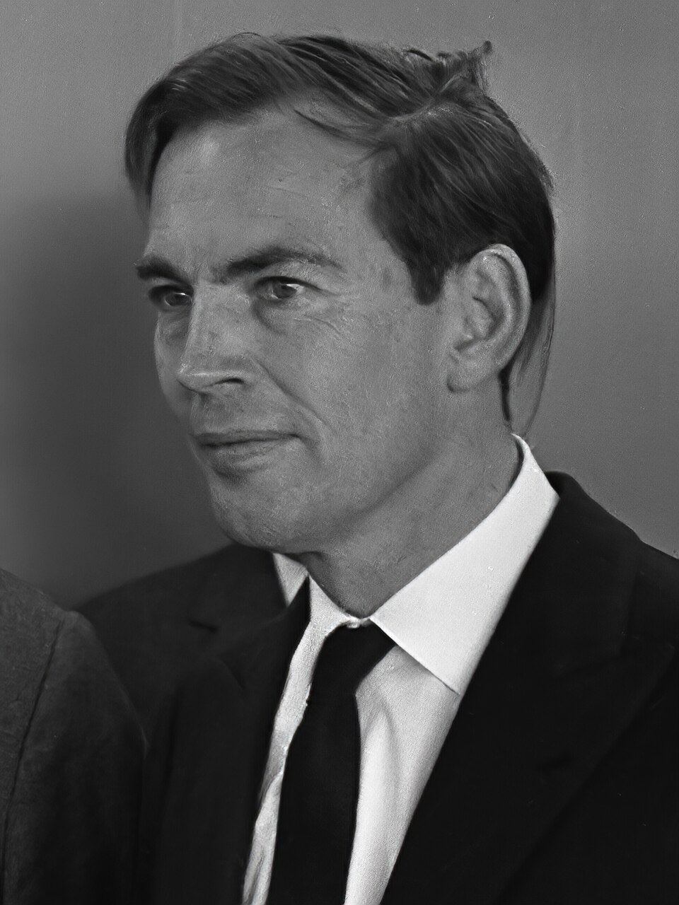

Late en otro pecho: Barnard trasplanta por primera vez un corazón humano
En un hospital de Ciudad del Cabo, el cirujano Christiaan Barnard sacó el corazón de una joven muerta en un accidente y lo hizo latir dentro del pecho de un almacenero enfermo. «Funciona», dijo. El mundo empieza a discutir dónde termina la muerte.

Cerca del amanecer, en el hospital Groote Schuur de Ciudad del Cabo, un equipo de treinta personas dirigido por el cirujano Christiaan Barnard completó lo que hasta anoche pertenecía a la fantasía: quitarle a un ser humano el corazón enfermo y reemplazarlo por el de otro. El nuevo corazón latía en el pecho de Louis Washkansky, un almacenero de cincuenta y tres años al que la diabetes y los infartos tenían sentenciado, y latía por sí solo. «Funciona», alcanzó a decir el cirujano al ver arrancar el órgano ajeno dentro de su paciente. Horas después, Washkansky despertó, habló y reconoció a los suyos: el primer hombre que vive con el corazón de otro.
El corazón que hoy late en Washkansky era, hasta anteayer, de una muchacha de veinticinco años. Denise Darvall cruzaba una calle con su madre cuando un automóvil las atropelló; la madre murió en el acto, y a la joven, con el cráneo destrozado y sin toda esperanza, los médicos la declararon perdida. Su padre, deshecho, dio la autorización que lo cambió todo: que el corazón sano de su hija sirviera para salvar a un desconocido. Sin ese gesto no habría habido operación, y en él está, además del drama de una familia, el nudo que el mundo empezará hoy a discutir: cuándo puede decirse que una persona ha muerto, y quién tiene derecho a decidirlo.
La técnica de coser un corazón en su sitio ya se venía ensayando en perros desde hacía años, en varios laboratorios del mundo; la parte mecánica, por así decirlo, estaba resuelta. El obstáculo verdadero es otro y sigue en pie: el cuerpo humano reconoce como intruso a cualquier órgano ajeno y lo ataca hasta destruirlo, ese rechazo que ha frustrado tantos trasplantes de riñón. Para engañar a esas defensas, los médicos deberán ahora bajarlas con drogas, y al bajarlas dejan al enfermo a merced de cualquier infección: se lo salva del rechazo para exponerlo al microbio. En esa cuerda floja caminará, a partir de hoy, la suerte del almacenero de Ciudad del Cabo.
La noticia dio la vuelta al mundo antes del mediodía y convirtió de la noche a la mañana a un cirujano desconocido en celebridad planetaria: apuesto, seguro de sí, Barnard se descubrió rodeado de fotógrafos que le preguntaban más por su vida que por su técnica. No faltan, entre bambalinas, las cuentas del reparto de méritos: buena parte de lo que hoy se aplica se aprendió en laboratorios de los Estados Unidos, donde otros cirujanos llevaban años preparando el terreno y quizá se preguntan esta noche por qué la primicia habló afrikáans. Hace apenas siete meses, sin ir más lejos, este diario contó cómo otro cirujano tendía un puente de vena para salvar el mismo corazón que hoy, en el Cabo, se cambia entero.
Sería imprudente cantar victoria: nadie sabe cuántos días o semanas resistirá el corazón trasplantado antes de que las defensas o los microbios digan su palabra, y la medicina prudente pide esperar. Pero algo más grande que un caso clínico ocurrió hoy, y no se deshará: la humanidad vio que el corazón, al que veinte siglos de poetas hicieron trono del alma y sede del amor, es también una bomba de músculo que puede desmontarse de un cuerpo y montarse en otro sin que el enfermo deje de ser quien es. La frontera entre la vida y la muerte, que parecía trazada por Dios, empieza hoy a discutirse, palmo a palmo, en las salas de los hospitales.